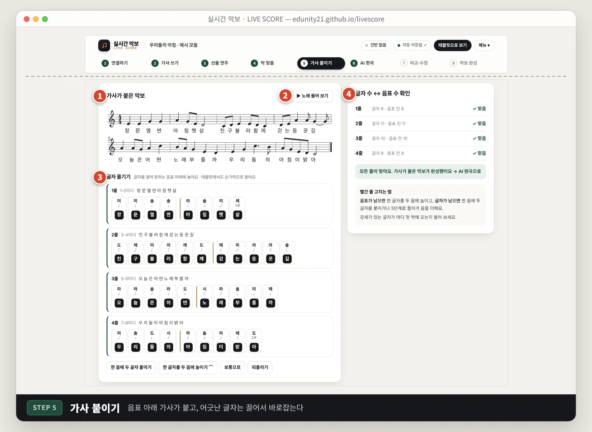
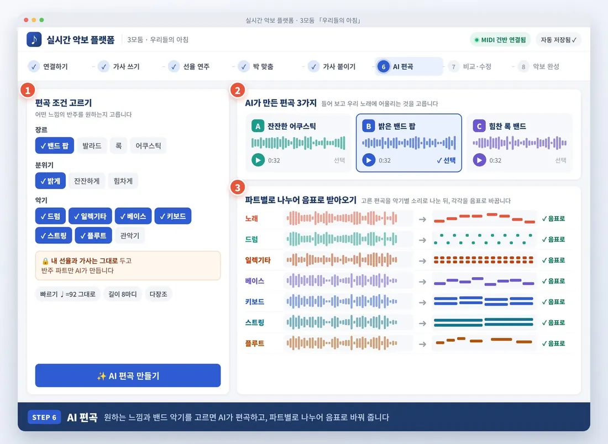

배치 팁 · 건반과 노트북은 모둠 책상 한가운데, 스피커는 노트북 옆. 작곡 담당이 건반 앞에 앉고, 나머지는 태블릿으로 같은 화면을 따라온다. 차시마다 역할을 돌리면 모두가 건반을 만져 본다.
02Part 02
수업 전날 설정
아래 순서대로 한 번 해 보면 수업 당일 막히는 곳이 거의 없습니다. 눌러서 표시해 두세요(이 기기에만 저장).
0 / 10
03Part 03
단계별 운영
각 단계는 시안 화면, 화면 구성(빨간 번호 순서), 교사 진행, 발문, 막히는 곳, 남는 것 순서로 정리했습니다.
STEP 1
연결하기
MIDI 건반을 노트북에 꽂고, 모둠의 새 창작곡을 만든다.
1차시 · 10분
시안 STEP 1 · 연결하기 — 빨간 번호가 아래 설명 번호
화면 구성
1
MIDI 건반 연결 — 노트북에 건반을 꽂으면 플랫폼이 자동으로 찾아 연결하고 ✓ USB MIDI 건반이 연결되었습니다를 띄운다. 아래 세 칸(크롬에서 플랫폼 열기 · 건반 USB 연결 · 소리 확인)이 모두 초록 체크가 되면 준비 끝.
2
새 창작곡 만들기 — 곡 제목을 쓰고 모둠원 역할(작사·작곡·편곡·기록·발표)을 정한 뒤, 작곡 방식을 건반으로 연주 또는 마우스로 입력 중에서 고르고 프로젝트 만들기를 누른다.
3
모둠원 태블릿 접속 — 화면의 QR을 갤럭시 탭으로 찍으면 모둠원이 같은 악보를 함께 보고 고친다. 태블릿 n대 접속 중으로 인원을 확인한다.
교사 진행
모둠 역할 다섯 개를 먼저 정하게 한다. 건반은 작곡 담당, 입력은 기록 담당이 맡는다.
건반이 없는 모둠은 작곡 방식을 마우스로 입력으로 고른다. 나머지 단계는 똑같다.
머리 오른쪽의 MIDI 건반 연결됨과 자동 저장됨✓ 표시를 함께 확인시킨다.
발문“이 노래를 누가, 어떤 장면에서 들었으면 좋겠나요?”
막히는 곳
연결 표시가 안 뜬다 · 크롬인지, MIDI 권한을 허용했는지, 다른 프로그램이 건반을 쓰고 있지 않은지 확인 → 09 문제 해결
태블릿이 안 들어온다 · 태블릿이 인터넷에 연결됐는지 확인하고, QR이 안 되면 주소를 직접 입력한다.
남는 것 · 모둠 프로젝트 · 역할 분담 · 태블릿 접속
STEP 2
가사 쓰기
노랫말을 쓰면 글자가 음절로 나뉘고, 한 줄이 두 마디로 배치된다.
1차시 · 15~25분
시안 STEP 2 · 가사 쓰기 — 빨간 번호가 아래 설명 번호
화면 구성
1
노랫말 쓰기 — 모둠이 함께 쓴 가사를 한 줄씩 입력한다. + 줄 추가 · 후렴 표시 · 맞춤법 확인. 도움말: 한 줄은 노래의 한 문장, 띄어쓰기는 그대로, 글자 수가 비슷하면 부르기 쉽다.
2
글자 1개 = 음표 1개 — 오른쪽 음절 나누기 · 마디 배치에서 글자가 음절 칸으로 자동으로 나뉜다.
3
한 줄 = 2마디 — 한 줄이 두 마디에 담긴다. 아래 1절 합계(줄 · 음절 · 마디 · 박자)를 확인하고 다음: 선율 연주 ▶.
교사 진행
목표는 네 줄 = 여덟 마디. 시안 예시곡은 줄마다 8·11·10·9음절이다.
한 줄이 12음절을 넘으면 두 마디에 음이 너무 촘촘해진다. 줄을 나누거나 말을 줄이게 한다.
가장 하고 싶은 말을 한 줄로 만들어 후렴 표시를 하게 한다.
발문“우리 노래에서 가장 하고 싶은 말은 어느 줄인가요? 그 줄을 몇 번 부르고 싶나요?”
막히는 곳
음절 수가 줄마다 크게 다르다 · 긴 줄은 나누고 짧은 줄은 꾸밈말을 더해 8~11음절로 맞춘다.
남는 것 · 네 줄 노랫말 · 음절 수 · 후렴 표시
STEP 3
선율 연주
예비박 네 번 뒤 건반으로 노래를 연주하면, 누른 음이 막대로 실시간 기록된다.
2차시 · 15분
시안 STEP 3 · 선율 연주 — 빨간 번호가 아래 설명 번호
화면 구성
1
연주 조건 — 박자(4/4) · 빠르기(♩=92, 막대로 조절) · 조성(다장조)을 정한다.
2
예비박과 녹음 — 예비박 1·2·3·4가 울린 뒤 연주를 시작하면 녹음 중 00:10처럼 시간이 흐른다.
3
연주 기록 — 건반을 누른 높이와 길이가 막대로 그려진다. 박이 조금씩 어긋나 있어도 괜찮다 — 다음 단계에서 맞춘다.
4
화면 건반 — 지금 누른 음: 레(D4) · 세기 82처럼 방금 누른 음과 세기가 보인다.
교사 진행
연주 전에 노랫말을 소리 내어 읽으며 말의 리듬을 먼저 찾게 한다.
다장조는 흰 건반만 써도 된다. 음역은 레4~미5 안이 중학생이 부르기 편하다.
처음에는 빠르기를 조금 낮춰 녹음하게 한다. 틀려도 다시 녹음하면 된다.
발문“노랫말을 말할 때 올라가는 글자, 내려가는 글자는 어디인가요?”
막히는 곳
막대가 그려지지 않는다 · 머리의 MIDI 건반 연결됨 표시와 녹음 상태를 확인한다. 화면 건반에 불이 들어오는지 본다.
음이 겹쳐 그려진다 · 한 번에 건반 하나씩 누르게 한다. 화음은 AI 편곡에서 붙는다.
남는 것 · 연주 기록(막대) · 녹음 시간
STEP 4
박 맞춤
고르지 않은 연주를 박에 맞추면 막대가 진짜 음표로 바뀐다.
2차시 · 10분
시안 STEP 4 · 박 맞춤 — 빨간 번호가 아래 설명 번호
화면 구성
1
연주 그대로 — 손으로 친 박은 조금씩 빠르거나 늦다. 원래 연주가 회색 막대로 보인다.
2
맞춤 단위 — 4분음표 · 8분음표 · 16분음표 중 하나를 고르고 → 박 맞춤을 누른다.
3
박에 맞춘 결과 — 점선은 원래 연주, 파랑은 맞춘 위치다. 어디가 얼마나 옮겨졌는지 한눈에 보인다.
4
음표로 바뀐 악보 — 막대의 높이는 음 높이로, 길이는 음표 종류로 바뀐다(짧은 막대 → 8분음표, 긴 막대 → 4분음표).
교사 진행
기본은 8분음표. 4분음표는 단순해지고, 16분음표는 원래 연주에 가깝지만 복잡해진다.
단위를 바꿔 가며 같은 연주를 비교하게 한다 — 학생이 리듬을 직접 고르는 지점이다.
발문“어느 단위가 우리 노랫말의 말맛에 가장 잘 맞나요?”
막히는 곳
리듬이 이상하게 바뀌었다 · 맞춤 단위를 바꿔 본다. 그래도 어색하면 3단계로 돌아가 빠르기를 낮춰 다시 녹음한다.
남는 것 · 음표로 된 선율 악보
STEP 5
가사 붙이기
음표 아래에 가사가 한 글자씩 붙고, 어긋난 글자는 끌어서 바로잡는다.
2차시 · 10분

시안 STEP 5 · 가사 붙이기 — 빨간 번호가 아래 설명 번호
화면 구성
1
음표 아래 가사 자동 배치 — 2단계에서 나눈 음절이 순서대로 음표 하나에 한 글자씩 붙는다.
2
3마디 크게 보기 · 글자 옮기기 — 글자를 끌어 원하는 음표 아래에 놓으면 바로 악보에 반영된다. 한 음에 두 글자 붙이기 · 한 글자를 두 음에 늘이기⌒ · 되돌리기.
3
글자 수 ↔ 음표 수 확인 — 줄마다 글자 수와 음표 수를 비교해 ✓ 맞음 또는 빨간색으로 알려 준다. 모든 줄이 맞으면 가사가 붙은 악보가 완성되고 AI 편곡으로 넘어간다.
교사 진행
빨간 줄부터 해결한다. 음표가 남으면 한 글자를 두 음에 늘이고, 글자가 남으면 한 음에 두 글자를 붙이거나 3단계로 돌아가 음을 더한다.
강세가 있는 글자가 센박(마디의 첫 박)에 오는지 들어 보게 한다.
발문“노래로 부를 때 어색하게 들리는 글자는 어디인가요?”
막히는 곳
글자를 끌어도 안 옮겨진다 · 태블릿에서는 글자를 길게 누른 뒤 끈다. 잘못 옮겼으면 되돌리기.
남는 것 · 가사가 붙은 선율 악보
STEP 6
AI 편곡
원하는 느낌과 밴드 악기를 고르면 AI가 편곡하고, 파트별로 나누어 음표로 바꿔 준다.
3차시 · 15분

시안 STEP 6 · AI 편곡 — 빨간 번호가 아래 설명 번호
화면 구성
1
편곡 조건 고르기 — 장르(밴드 팝 · 발라드 · 록 · 어쿠스틱), 분위기(밝게 · 잔잔하게 · 힘차게), 악기(드럼 · 일렉기타 · 베이스 · 키보드 · 스트링 · 플루트 · 관악기)를 고른다. 🔒 내 선율과 가사는 그대로 두고 반주 파트만 AI가 만듭니다 — 빠르기·길이·조성도 그대로. ✨ AI 편곡 만들기.
2
AI가 만든 편곡 3가지 — 예: A 잔잔한 어쿠스틱 · B 밝은 밴드 팝 · C 힘찬 록 밴드. 끝까지 들어 보고 우리 노래에 어울리는 것을 선택한다.
3
파트별로 나누어 음표로 받아오기 — 고른 편곡을 악기별 소리로 나눈 뒤 각각을 음표로 바꾼다(노래 · 드럼 · 일렉기타 · 베이스 · 키보드 · 스트링 · 플루트 → ✓ 음표로).
교사 진행
조건을 고르기 전에 “이 노래를 들을 사람과 장면”을 정하게 하고, 고른 이유를 기록 담당이 적게 한다.
발문“처음 버전과 새 버전에서 가장 크게 달라진 소리는 무엇인가요? 우리가 왜 그렇게 고쳤나요?”
막히는 곳
내보낸 파일이 열리지 않는다 · 악보 파일은 뮤즈스코어 4에서 파일 › 열기로 연다. 휴대폰보다 노트북에서 여는 것이 안전하다.
남는 것 · 밴드 총보(PDF) · 악보 파일 · MIDI · 새 버전 노래
04Part 04
AI 편곡: 수노 작업 절차
학교 현장형에서 STEP 6의 AI 편곡은 교사 계정의 수노에서 만듭니다. 노래를 만든 뒤 악기별 소리(스템)로 나누고, 각 스템을 MIDI로 받아 플랫폼에 가져오면 박에 맞춰 파트별 음표로 바뀝니다.
필요한 것 · 수노 Premier 요금제. MIDI 받기는 Premier 전용인 수노 스튜디오(Studio)에서만 된다. 메뉴 이름과 크레딧은 2026년 11월 기준이며 수노 업데이트에 따라 바뀔 수 있다.
순서
선율 음원 만들기 · 플랫폼에서 가사가 붙은 선율을 MIDI 또는 악보 파일로 내보내고, 뮤즈스코어에서 열어 MP3로 내보내기 한다. 수노에 올릴 선율 안내 음원이다.
선율 올리기 · 수노 Create 화면의 Upload Audio로 선율 음원을 올린다.
Cover로 만들기 · 올린 음원의 메뉴(⋯)에서 Cover를 고르고, 모둠 노랫말과 STEP 6에서 고른 편곡 조건(장르·분위기·악기·빠르기)을 스타일 칸에 쓴다. Cover는 원래 선율을 기준으로 새 버전을 만든다. 생성할 때마다 보통 두 곡씩 나오므로 두 번 만들어 세 버전을 고른다.
스템 나누기 · 고른 곡의 메뉴(⋯) → Get Stems → 나누는 방식 선택 → Extract. 스튜디오에서는 클립의 Stems 패널에서 나눈다.
스템별 MIDI 받기 · 스튜디오에서 필요한 스템을 누르고 Get MIDI → Export로 내려받는다.
플랫폼에 가져오기 · STEP 6 파트별로 나누어 음표로 받아오기에 MIDI 파일을 넣으면 박에 맞춰(퀀타이즈) 파트별 음표가 된다.
가사 맞추기 · 수노 노래의 가사를 악보에 넣고, 음표와 어긋난 글자는 STEP 5 방식(끌어 옮기기·늘이기·붙이기)으로 손으로 맞춘다.
다시 만들기 · STEP 8에서 고친 악보를 다시 음원으로 만들어 수노에 넣고 새 버전을 만든다. 처음 버전과 비교해 듣는다.
크레딧 어림 곡 하나 기준
작업
크레딧
메모
Auto Split(자동 스템 분리)
50
최대 12개 스템. Pro·Premier
Split from Mix(악기 하나씩)
스템당 10
필요한 악기만 뽑을 때. Pro·Premier
Get MIDI
스템당 10
스튜디오 · Premier
예: 7파트(노래·드럼·일렉기타·베이스·키보드·스트링·플루트)
약 120
Auto Split 50 + MIDI 7개 × 10
시간 아끼기 · 모둠이 STEP 6에서 고른 조건을 받아 두었다가 3차시 전날 교사가 한꺼번에 만든다. 수업 시간에는 세 버전 듣기와 비교·수정에 집중한다.
주의 · 드럼·스트링처럼 여러 소리가 겹친 스템은 MIDI 변환이 부정확할 수 있다. 노래·베이스·키보드부터 쓰고, 나머지는 뮤즈스코어에서 정리한다. 학생 개인 수노 계정은 만들지 않는다.
05Part 05
뮤즈스코어로 마무리
플랫폼에서 내보낸 악보는 뮤즈스코어에서 더 다듬을 수 있습니다. 학교 현장형에서는 건반을 뮤즈스코어에 바로 연결해 음표를 입력할 수도 있습니다.
A · 플랫폼 악보 열기
내보내기 → 열기 → 다듬기
STEP 8 악보 파일로 내보내기로 악보 파일(MusicXML)을 받는다.
뮤즈스코어 4에서 파일 › 열기로 연다.
가사·셈여림·악기 이름·제목을 다듬는다.
파일 › 내보내기로 PDF(인쇄)·MP3(듣기)·MIDI를 만든다.
B · 건반으로 직접 입력
아투리아 → 뮤즈스코어
건반을 노트북에 연결하고 크롬의 플랫폼 탭은 닫는다(윈도).
환경설정의 입출력(I/O) 탭에서 MIDI 입력 장치를 건반으로 고른다.
첫 마디를 누르고 N(음표 입력 모드). 숫자 키로 길이를 고른다(4 = 8분음표, 5 = 4분음표, 6 = 2분음표).
건반을 누르면 고른 길이로 음이 들어간다. Ctrl+L로 가사를 넣고 Space로 다음 음표로 넘어간다.
AI 편곡 비교하기 · 뮤즈스코어에서 만든 선율 악보 파일을 생성형 AI(클로드 등)에 올려 반주 파트 편곡을 요청하고, 받은 악보 파일을 다시 뮤즈스코어에서 열어 내 선율과 비교·수정할 수도 있다. 이때도 고친 이유 한 줄을 남긴다.
06Part 06
4차시 운영안
예시안입니다. 학교 사정에 맞게 차시를 늘리거나 단계를 합치세요.
차시
단계
흐름(분)
남는 것
1차시 · 역할과 노랫말
STEP 1 · 2
도입 5(완성곡을 받기만 하는 AI vs 고쳐 쓰는 AI) → 연결·프로젝트·역할 10 → 노랫말 25 → 정리 5
프로젝트, 네 줄 노랫말
2차시 · 연주와 기보
STEP 3 · 4 · 5
시범 5 → 선율 연주 15 → 박 맞춤 10 → 가사 붙이기 10 → 정리 5
가사가 붙은 선율 악보
3차시 · AI 편곡과 비교
STEP 6 · 7
편곡 조건과 이유 10 → 세 버전 듣고 선택 10 → 비교·수정과 고친 이유 20 → 정리 5
선택한 편곡, 수정 기록
4차시 · 총보와 발표
STEP 8
총보 확인·내보내기 10 → 처음 버전 vs 새 버전 15 → 모둠 발표 15 → 성찰 5
총보 PDF, 발표
시간이 모자라면 · 노랫말은 앞 차시 과제로 미리 쓰고, AI 편곡은 교사가 전날 만들어 둔다. 2차시가 가장 빠듯하므로 박 맞춤 단위는 8분음표로 고정해도 된다.
07Part 07
평가와 기록
STEP 7의 고친 이유 한 줄이 그대로 과정중심평가 기록이 됩니다. 결과물이 아니라 학생이 무엇을 듣고 왜 그렇게 정했는지를 봅니다.
고친 이유 한 줄 · 채점 기준 예시
수준
특성
예
상
들린 위치 + 음악 요소 + 의도·효과를 함께 씀
“3마디 ‘웃음도’가 8분음표로 박에 딱 맞게 들려서 내 리듬 유지”
중
위치나 음악 요소 중 하나만 분명함
“리듬이 더 자연스러워서 AI 리듬 사용”
하
선호만 있음
“그냥 이게 좋아서”
함께 보는 기록
수정 기록 · 학생 결정 수와 AI 채택 수. 어느 쪽이 많은지가 아니라, 결정마다 이유가 있는지를 본다.
편곡 조건과 고른 이유(STEP 6) · 장면·청중에 맞춰 골랐는가.
처음 버전 vs 새 버전 발표(STEP 8) · 달라진 소리를 음악 요소로 설명하는가.
역할 수행 · 다섯 역할이 각자 맡은 화면에서 기여했는가.
피드백 문구 예시“3마디에서 두 리듬을 다 들어 보고 정한 점이 좋아요. 왜 그쪽이 더 잘 들렸는지 ‘빠르기’나 ‘리듬’ 같은 말로 한 번 더 써 볼까요?”
서·논술형으로 잇기 · 같은 흐름을 서·논술형 평가로 옮긴 「귀명창」 문항과 중3 캠페인송 세트가 OPEN SCORE 07장 평가에 있다.
08Part 08
확장 활동
완성한 노래를 교실 밖으로 이어 가는 활동입니다.
Scene
가사 구절별 장면 이미지
가사 줄마다 어울리는 장면 이미지를 붙여 노래의 이야기를 그림으로 정리한다.
Lyric Video
가사 뮤직비디오
가사를 초 단위로 음원에 맞추고 장면을 붙여 리릭 비디오로 만든다. QR로 복도·급식실에 걸 수 있다. 예시 보기
① 크롬(또는 엣지)으로 열었는가 — 사파리는 MIDI 건반을 지원하지 않는다. ② 주소창 왼쪽 사이트 정보 아이콘에서 MIDI 기기 권한이 허용인가. ③ 뮤즈스코어·건반 설정 프로그램 등 다른 프로그램이 건반을 쓰고 있지 않은가 — 닫고 새로고침. ④ 케이블을 노트북 본체 포트에 직접, 다른 케이블로(충전 전용 케이블 주의). ⑤ 건반을 뺐다 꽂고 새로고침.
연결됐는데 소리가 안 난다
노트북 음량과 탭 음소거를 확인하고, 화면 건반을 마우스로 눌러 본다. 스피커 연결을 확인한다.
막대가 늦게 그려진다
블루투스 스피커 지연일 수 있다 → 유선·노트북 스피커로. 다른 탭과 프로그램을 닫는다.
박 맞춤 뒤 리듬이 이상하다
맞춤 단위를 바꿔 본다. 예비박이 끝난 뒤 시작했는지 확인하고, 빠르기를 낮춰 다시 녹음한다.
가사 줄이 빨간색이다
글자 수와 음표 수가 다르다. STEP 5의 한 음에 두 글자 붙이기 · 한 글자를 두 음에 늘이기로 맞춘다.
태블릿이 QR로 안 들어온다
태블릿 인터넷 연결 → 카메라 앱으로 QR 다시 찍기 → 주소 직접 입력 → 교육청 계정 로그인 순으로 확인한다.
‘자동 저장됨’이 사라졌다
인터넷이 끊긴 경우가 많다. 다시 연결되면 새로고침하기 전에 악보 파일로 내보내기로 백업한다.
수노 MIDI 음표가 지저분하다
겹친 소리가 많은 스템은 변환이 부정확할 수 있다. 필요한 파트만 쓰거나 뮤즈스코어에서 정리한다.
뮤즈스코어에서 건반이 안 된다
크롬의 플랫폼 탭을 닫는다(윈도). 환경설정의 입출력(I/O)에서 입력 장치를 고르고, 음표 입력 모드(N)를 켠다.
10Part 10
안전·저작권·개인정보
이름 대신 모둠과 역할 · 기록과 결과물에는 학생 이름 대신 모둠명과 역할을 쓴다. 사진을 공개할 때는 얼굴을 흐리게 한다.
수노는 교사 계정으로 · 학생 개인 계정이나 결제 정보는 필요 없다.
AI 협업 표기 · 결과물에 ‘AI 편곡 협업’처럼 AI를 쓴 부분을 밝힌다.
올리는 소리는 우리 것만 · 수노에 올리는 음원과 가사는 학생이 직접 만든 것만 쓴다. 다른 사람의 노래나 가사는 올리지 않는다.
공개 전 확인 · AI 생성 음원의 이용 조건은 요금제에 따라 다르다. 학교 밖으로 공개·배포하기 전에 확인한다.